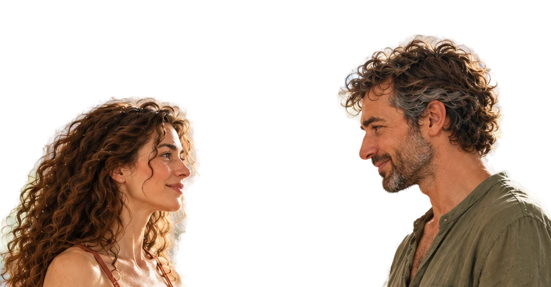
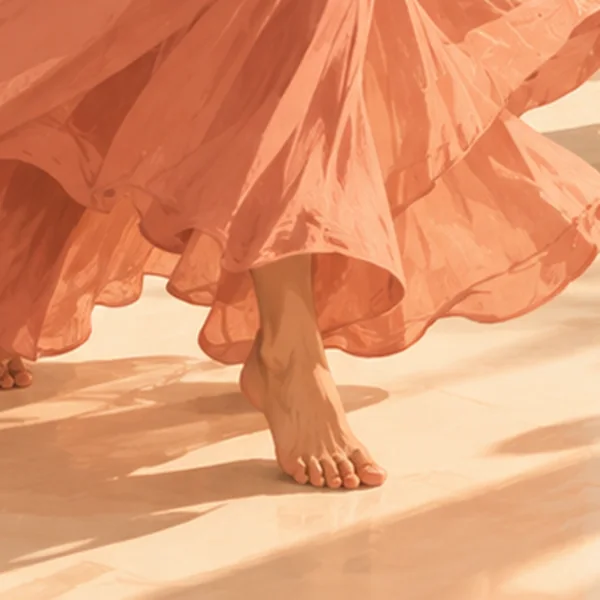
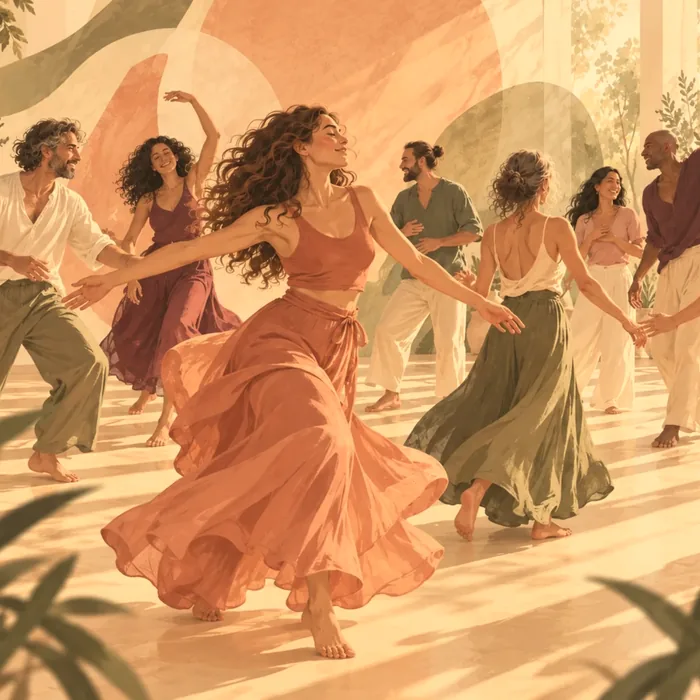
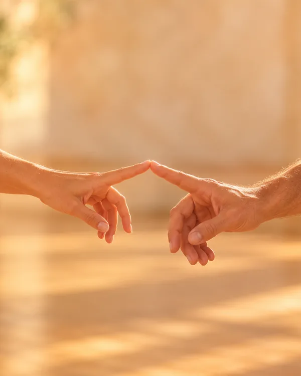
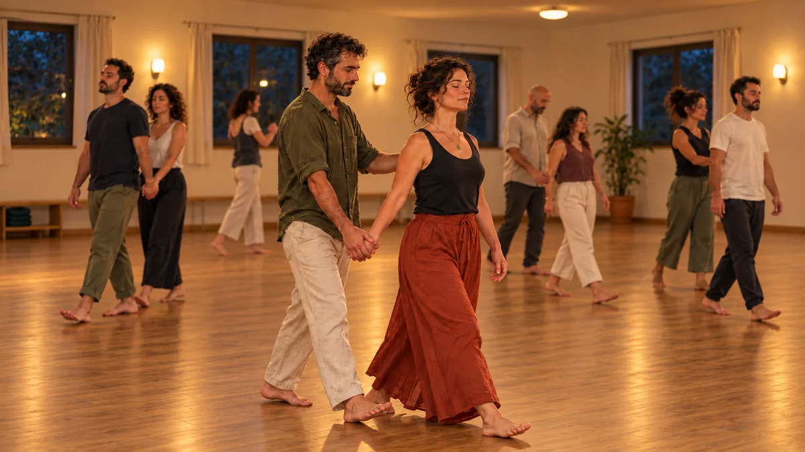
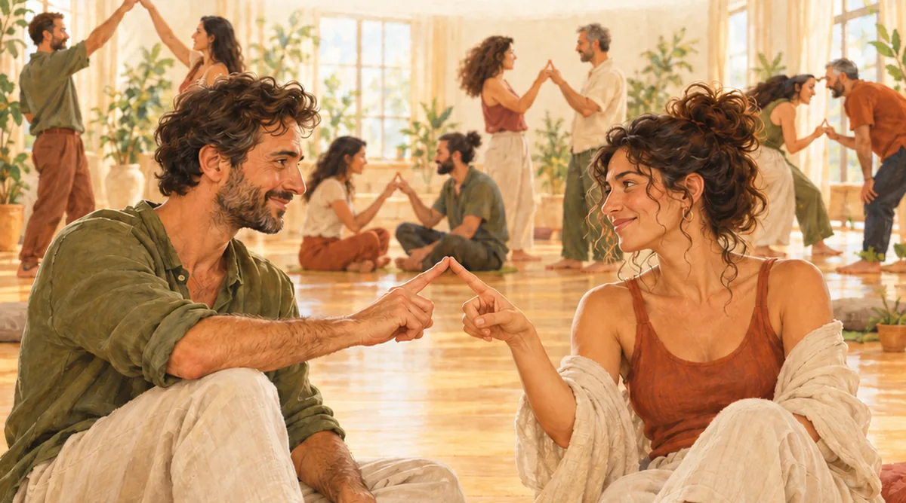
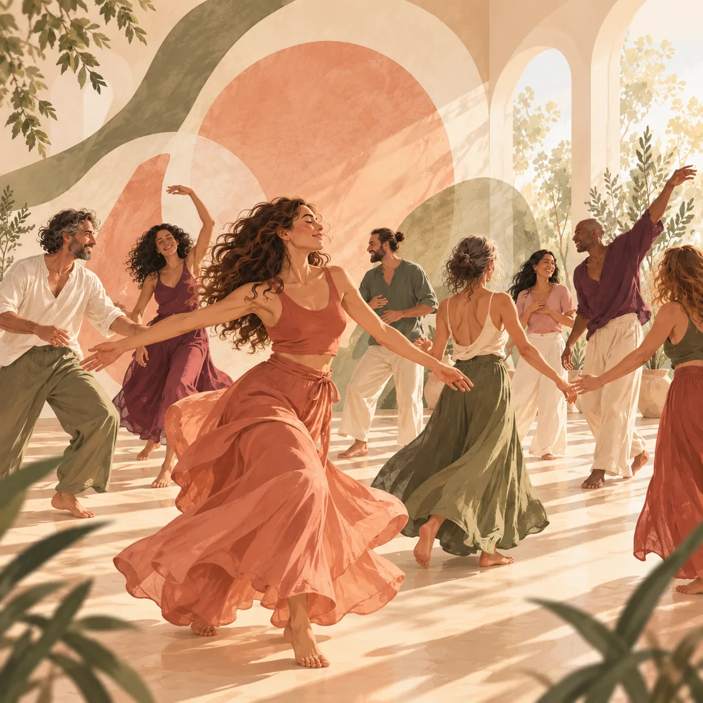

הדר לוריא
חוקרת את החיבור בין גוף, רגשות ותקשורת. מנחה תנועה, תקשורת מקרבת, יוגה ומדיטציה, ומביאה לקבוצה רגישות ועומק
שיחה עם הדרבודקים מה המפגש הקרוב
הזמנה
להכיר אנשים חדשים, בלי לחפש מה להגיד. תנועות פשוטות בקבוצה, בהנחיה ולצלילי מוזיקה, וההיכרות קורית מעצמה
נשים וגברים בגילאי 40–50 בפרק פתוח בחיים, עם רצון לפתוח את הלב

בין העבודה, הבית והראש שלא נעצר, הימים מתחילים להיראות אותו דבר
בערב הזה יוצאים מזה לשעתיים, למקום אחר, בין אנשים אחרים, ובתנועה שמזיזה גם את מה שבפנים
ומתוך כל זה יכולות לצמוח חברות, קרבה ואולי גם אהבה
הסבר קצר על מה שהולך לקרות ושיתופים מהמפגש האחרון
מוזיקה מיוחדת ותרגילים פשוטים שמוציאים מהראש ומכניסים לגוף. נכנסים לחוויה שהיא בעצם הרפתקה קטנה
כל רגע במפגש מונחה, אנחנו מסבירים כל תרגיל ומדגימים אותו

שובבות וכיף, הרבה תנועה, והדופק עולה

הקצב יורד, נכנסים פנימה, והלב נפתח, ומגלים את עצמנו מחדש
כאן הקסם מתחיל לקרות

הקצב עולה שוב, ויוצאים ערניים ומלאי חיים
פוגשים שוב את אותם אנשים וממשיכים מאותה נקודה, מפגש אחרי מפגש
ופנים חדשות מצטרפות בין מפגש למפגש

במפגש הזה לומדים להתחבר מתוך אמון וביטחון. לדוגמה, אפשר לעצום עיניים ולהרגיש שיש על מי לסמוך, ואת התחושה הזו לוקחים איתנו הלאה, אל החיים

בלי מילים ובלי מוביל, רק הקשבה שהופכת לריקוד
הביודנסה משלבת מוזיקה, תנועה וקשר אנושי כדי לטפח תחושת חיות, ביטחון ופתיחות. החוויה מזמינה אותנו להקשיב למה שאנחנו מרגישים, לבטא את עצמנו ולהרגיש בנוח עם אחרים. את מה שחווים במפגשים אפשר לקחת גם ליומיום, ליחסים שלנו ולדרך שבה אנחנו פוגשים את החיים

חוקרת את החיבור בין גוף, רגשות ותקשורת. מנחה תנועה, תקשורת מקרבת, יוגה ומדיטציה, ומביאה לקבוצה רגישות ועומק
שיחה עם הדריוצר ומנחה מפגשי מוזיקה, תנועה ושירה. לומד ומעמיק בדרך שבה מוזיקה ותנועה מקרבות בין אנשים, ומביא לקבוצה חום, משחקיות וגובה עיניים
שיחה עם אופירהקבוצה השקטה
מצטרפים לקבוצת וואטסאפ לעדכונים: מקבלים הודעה על המפגשים הקרובים, בלי שיחות ובלי רעש
ממש לא. המטרה היא לא לרקוד יפה, אלא פשוט לנוע
בחלק מהתרגילים יכולה להיות הזמנה למגע עדין, בדרך כלל אחיזת ידיים. כל מגע הוא אופציונלי ובהסכמה, ואפשר לבחור שלא להשתתף בלי צורך להסביר
זה טבעי, וזה חלק מהעניין. כולנו מתחילים מאותה נקודה. עם הזמן נרגעים, וצומח משהו חדש: אמון, קלילות וחיוך שבא מעצמו
לא. המשתתפים נמצאים כרגע ללא זוגיות, אבל אין שום ציפייה שמשהו צריך לקרות
בגדים נוחים שקל לזוז בהם. כדאי להביא גם בקבוק מים